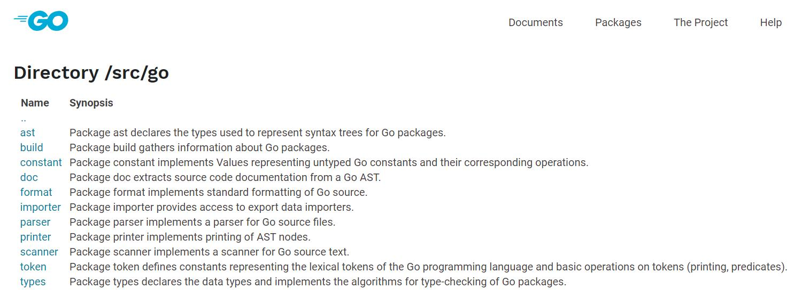

ΕΝΟΤΗΤΑ 2 GO - GO Application Structure and Build Process
Στο δωρεάν μάθημα Go της ενότητας 1 , είχαμε την ευκαιρία να εγκαταστήσουμε σωστά την γλώσσα προγραμματισμού Go και το VS Code μέσα από το οποίο θα αναπτύξουμε τα προγράμματα μας. Στο σημερινό, δωρεάν μάθημα στην γλώσσα προγραμματισμού Go, θα αναλύσουμε γραμμή προς γραμμή τον απλό κώδικα που χρησιμοποιήσαμε στην ενότητα 1 και θα δούμε τις επιλογές που έχουμε για να χτίσουμε και να εκτελέσουμε ένα πρόγραμμα σε γλώσσα Go μέσα από το command prompt.
Στην ενότητα 1 είδαμε ότι για να μπορέσουμε να εκτελέσουμε ένα κώδικα, πρώτα δημιουργήσαμε ένα φάκελλο με το όνομα go και μέσα σε αυτό το φάκελλο δημιουργήσαμε άλλους τρεις με το όνομα bin, pkg και src. Μετά δηλώσαμε τον φάκελλο go στα user variables των windows με την μεταβλητή GOPATH. Αυτό που στην πραγματικότητα πετύχαμε είναι να δηλώσουμε ένα workspace για τον κώδικα που θα αναπτύσσει ο χρήστης των windows. Στην ουσία ένα workspace δεν είναι τίποτα άλλο από ένας φάκελλος στα Windows μέσα στον οποίο θα υπάρχει ο κώδικας μας.
Αν θέλουμε να δούμε όλες τις μεταβλητές που ορίζουν το περιβάλλον της Go στα Windows, δεν έχουμε παρά να ανοίξουμε ένα terminal στο VS Code και να εκτελέσουμε την εντολή go env.

Μέσα στο φάκελλο go, ο οποίος έχει οριστεί μέσα από την μεταβλητή GOPATH, ορίσαμε τρεις φακέλλους.
- src– Εδώ γράφουμε τα δικά μας προγράμματα (όπως ήδη έχουμε κάνει), τα οποία ονομάζονται πακέτα.
- pkg– Εάν χρειαζόμαστε έξτρα βιβλιοθήκες που θα δώσουν παραπάνω δυνατότητες στον κώδικα μας τότε εδώ είναι το σημείο που θα της εγκαταστήσουμε. Οι βιβλιοθήκες δεν είναι εκτελέσιμα αρχεία, αλλά καλούνται από τον δικό μας εκτελέσιμο κώδικα για να προσθέσουν τις έξτρα λειτουργίες τους στο κώδικα μας. Συνήθως αυτές οι βιβλιοθήκες έχουν κατάληξη .a.
- bin– Εδώ δημιουργείται από την Go το εκτελέσιμο αρχείο του κώδικα μας όταν τρέχουμε την εντολή go install.
Τις εντολές της Go για την δημιουργία εκτελέσιμων αρχείων, όσο και την σημασία αυτών των τριών φακέλλων, θα την δούμε λίγο πιο κάτω με ένα παράδειγμα. Αυτό που πρέπει να καταλάβετε όμως είναι ότι πρέπει κάθε πρόγραμμα Go να είναι γραμμένο μέσα στον δικό του φάκελλο έτσι ώστε να μην υπάρχει σύγχυση με τα πολλαπλά εκτελέσιμα αρχεία main.go που θα γράψουμε. Θα ήταν φρόνιμο λοιπόν κάτω από το src φάκελο να δημιουργήσουμε ένα φάκελλο με το όνομα του project που θα δημιουργήσουμε σε αυτή την ενότητα. Κάνετε λοιπόν δεξί κλικ επάνω στον φάκελο src και αφού επιλέξετε New Folder ονομάστε τον φάκελο unit2.

Τώρα, μέσα στο φάκελο unit2 δημιουργούμε ένα αρχείο με το όνομα main και την κατάληξη go (main.go). Με το όνομα main στο αρχείο μας δηλώνουμε ότι το project μας θα ξεκινήσει από αυτό το αρχείο την εκτέλεση του.
Μέσα στο αρχείο γράφουμε πρώτα
package main
Αυτό ονομάζεται package declaration και κάθε Go εφαρμογή πρέπει να ξεκινάει με αυτή την δήλωση πακέτου. Με τα πακέτα, η Go μας προσφέρει ομάδες κώδικα που αναφέρονται σε κάποια συγκεκριμένη λειτουργία που εμείς μπορούμε να χρησιμοποιήσουμε χωρίς να ξαναγράψουμε τον κώδικα τους. Τα πακέτα μπορούν να έχουν δύο μορφές: είτε να είναι εκτελέσιμα (δηλαδή στα Windows να έχουν .exe κατάληξη), είτε να είναι libraries (βιβλιοθήκες) που περιέχουν λειτουργίες ήδη προγραμματισμένες για εμάς. Το package main ειδοποιεί τον Go compiler ότι το πακέτο θα δημιουργηθεί σαν εκτελέσιμο και όχι σαν shared library.
Μετά μας επιτρέπεται να αφήσουμε μια κενή γραμμή (για να είναι πιο οργανωμένος ο κώδικας μας και εύκολα αναγνωρίσιμος) και γράφουμε
import “fmt”
Εδώ καλούμε με την import εντολή το πακέτο fmt από την go που μας δίνει δυνατότητες μορφοποίησης (formatting) για τα input και output δεδομένα της εφαρμογής. Άλλωστε και το fmt προέρχεται από την λέξη format. Προσέξτε λίγο τον τρόπο με τον οποίο δηλώνουμε το πακέτο χρησιμοποιώντας double quotes ( “ “). Θα μπορούσαμε, αν και εφόσον τα χρειαζόμαστε, να δηλώσουμε παραπάνω από ένα πακέτο. Σε αυτή την περίπτωση θα πρέπει να χρησιμοποιήσουμε και παρενθέσεις. Θα μπορούσαμε την πιο πάνω γραμμή να την γράψουμε και ως:
import (
“fmt”
)
Και αν θέλαμε να προσθέσουμε ακόμα ένα πακέτο θα μπορούσαμε πολύ απλά να προσθέσουμε μόνο το όνομα όπως:
import (
“fmt”
“log”
)
Για το δικό μας παράδειγμα, ας παραμείνουμε με την δήλωση του fmt πακέτου μόνο

Αν θέλετε να προσθέσετε χρήσιμα σχόλια μέσα στον κώδικα, που δεν τα λαμβάνει υπόψη η Go αλλά βοηθάνε εσάς ή άλλους προγραμματιστές, μπορείτε να χρησιμοποιήσετε τα σύμβολα // για να γράψετε σχόλια σε μια γραμμή ή μπορείτε να χρησιμοποιήσετε /* */ για να γράψετε σχόλια που ίσως είναι μια ολόκληρη παράγραφο.

Δηλώσαμε στην αρχή του προγράμματος μας ότι το πακέτο που θα δημιουργήσουμε θα είναι εκτελέσιμο. Αυτός είναι και ο κύριος λόγος που γράψαμε την εντολή package main στην αρχή του κώδικα μας. Όμως η Go έχει ορίσει ένα αρχικό σημείο εκτέλεσης του κώδικα και αυτό είναι ο κώδικας που βρίσκεται μέσα σε μια προκαθορισμένη μέθοδο με το όνομα main( ). Η μέθοδος αυτή είναι απαραίτητη όταν δηλώνουμε το πακέτο main γιατί προσδιορίζει ότι το πακέτο μας θα είναι εκτελέσιμο και η εκτέλεση του θα ξεκινήσει από μια function με το όνομα main.
Γενικότερα στην Go ονομάζουμε functions ομαδοποίηση κώδικα που μπορούμε να καλέσουμε με ένα όνομα. Τα functions μπορούν να δεχτούν inputs, να μας δώσουν output και μπορούν να περιέχουν ότι κώδικα θέλουμε εμείς να εκτελεστεί. Όλα τα functions ξεκινάνε με την λέξη κλειδί func και αμέσως μετά δηλώνουμε το όνομα του function και παρενθέσεις. Επίσης, προαιρετικά, μπορούμε και να δηλώσουμε και το return type των δεδομένων που θα λάβουμε μετά την εκτέλεση του function.
Η func main( ) δεν δέχεται παραμέτρους και δεν επιστρέφει τίποτα στο πρόγραμμα.
Τώρα είμαστε έτοιμοι να γράψουμε τον κώδικα που θα εκτελεστεί μέσα στην main( ) function. Για να κρατήσουμε το παράδειγμα μας όσο πιο απλό γίνεται, ας εκτυπώσουμε ένα μήνυμα στο terminal. Για να μπορέσουμε να το κάνουμε αυτό, θα πρέπει να καλέσουμε την function println( ) που βρίσκεται μέσα στο πακέτο fmt. Όταν γράψουμε fmt. θα εμφανιστεί η λίστα με όλα τα functions που περιέχει το πάκετο.

Μέσα στην Println( ) function γράφουμε το μήνυμα που θέλουμε να εμφανίσουμε στην οθόνη που είναι Welcome to Kassapoglou site.

Το πρόγραμμα μας έχει ολοκληρωθεί. Τώρα απομένει να το εκτελέσουμε. Για να τρέξουμε το πρόγραμμα μας χωρίς να το χτίσουμε μπορούμε είτε να πατήσουμε το arrow button επάνω δεξιά στην οθόνη, είτε να πάμε στο terminal (μέσα από το VS Code) και να τρέξουμε την εντολή go run main.go.
Μέχρι τώρα μάθαμε να δημιουργούμε ένα ολοκληρωμένο πρόγραμμα σε Go και να το εκτελούμε. Όμως σε production περιβάλλον δεν θα χρησιμοποιήσουμε το source code αλλά τον compile code. Οπότε η ερώτηση είναι εξής: Τώρα που γράψαμε το πρόγραμμα μας και είμαστε ικανοποιημένοι με το αποτέλεσμα, πως το κάνουμε build για να είναι έτοιμο για production?
Η απάντηση βρίσκεται στην εντολή go που τρέξατε προηγουμένως. Εκτός από την go run εντολή, η οποία απλά εκτελεί το πρόγραμμα μας, υπάρχει και η go build η οποία κάνει compile τον κώδικα μας μαζί με όλες τις βιβλιοθήκες που χρειάζεται από την Go. Το αποτέλεσμα της go build εντολής είναι να δημιουργηθεί ένα εκτελέσιμο αρχείο που περιέχει ότι χρειάζεται για να εκτελεστεί αυτόνομα στο λειτουργικό σύστημα που επιθυμούμε. Πριν δούμε μερικά παραδείγματα, καλό είναι να εξοικειωθείτε λίγο και με το documentation της Go που περιγράφει αυτές τις εντολές (https://golang.org/pkg/go/ ) .
Ωραία, μπορούμε τώρα να δούμε μερικά πιο εξειδικευμένα σενάρια εκτέλεσης αλλά και χτισίματος του project μας.
Έχουμε ήδη μάθει ότι η εντολή go run main.go κάνει compile και τρέχει το πρόγραμμα μας. Αυτό που βλέπουμε είναι μόνο το τελικό αποτέλεσμα. Αν θέλαμε να δούμε περισσότερες πληροφορίες για αυτή την διαδικασία, μπορούμε πολύ απλά να τρέξουμε την εντολή: go run -x main.go
Αν τώρα θέλουμε να δημιουργήσουμε το εκτελέσιμο πακέτο της εφαρμογής μας, θα πρέπει να τρέξουμε την εντολή: go build. Η συγκεκριμένη εντολή θα δημιουργήσει ένα εκτελέσιμο αρχείο με το όνομα του να είναι το όνομα του φακέλου στο οποίο βρίσκεται. Στην δική μας περίπτωση θα είναι unit2.exe.
Το εκτελέσιμο αρχείο unit2.exe δημιουργήθηκε όμως θα πρέπει να το τρέξουμε μόνοι μας μέσα από το terminal.

Αν τώρα θέλουμε να δώσουμε δικό μας όνομα στο εκτελέσιμο αρχείο αντί να πάρει το όνομα του πακέτου, μπορούμε να χρησιμοποιήσουμε το -o με την go build εντολή. Για να ονομάσουμε το τελικό εκτελέσιμο αρχείο Welcome θα γράφαμε:
go build -o Welcome.exe

To Welcome.exe αρχείο που δημιουργήσαμε είναι εκτελέσιμο μόνο για την πλατφόρμα των Windows. Αν όμως θέλαμε να δημιουργήσουμε ένα εκτελέσιμο αρχείο για την Linux πλατφόρμα θα έπρεπε να γράφουμε τον κώδικα μας σε Linux? Φυσικά και όχι. Μπορούμε να παράγουμε εκτελέσιμα αρχεία για οποιαδήποτε πλατφόρμα.
Εδώ θα χρειαστούμε την βοήθεια του Go documentation που μας δίνει τις εντολές που χρειάζεται να καλέσουμε έτσι ώστε να δημιουργήσουμε εκτελέσιμα αρχεία για διαφορετικά λειτουργικά συστήματα (https://golang.org/cmd/go/#hdr-Compile_packages_and_dependencies )

Με βάση λοιπόν το documentation της Go, χρειάζεται να ορίσουμε τις τιμές για δύο παραμέτρους: της GOOS που ορίζει το λειτουργικό σύστημα και της GOARCH που ορίζει την αρχιτεκτονική (32 ή 64 bit). Όταν είχαμε τρέξει την εντολή go env είχαμε δει ότι η GOARCH και η GOOS ήταν δύο από τις παραμέτρους που η Go είχε προκαθορίσει για εμάς αφού είχαμε κάνει εγκατάσταση την Go σε πλατφόρμα Windows.
Πρέπει λοιπόν να αλλάξουμε τις δύο αυτές παραμέτρους πριν τρέξουμε πάλι την εντολή go build. Για να αλλάξουμε την τιμή μιας παραμέτρου απλά γράφουμε την εντολή set, το όνομα της παραμέτρου και την νέα τιμή που θα της αναθέσουμε. Οπότε θα γράψουμε:
set GOOS=linux
set GOARCH=amd64
go build -o Welcome
Προσέξτε, τα αρχεία Linux έχουν μόνο όνομα χωρίς κατάληξη.


Τέλος, με βάση το Go documentation υπάρχει και η εντολή go install. Το αποτέλεσμα είναι ακριβώς ίδιο με εκείνο της εντολής go build με την διαφορά ότι η εντολή go install δημιουργεί το εκτελέσιμο αρχείο μέσα στο φάκελο bin ενώ η εντολή go build το δημιουργεί στο src όπου βρίσκεται ο αρχικός κώδικας.